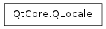

QLocale ¶

Synopsis ¶
Functions ¶
- def __eq__ (other)
- def __ne__ (other)
- def amText ()
- def country ()
- def dateFormat ([format=LongFormat])
- def dateTimeFormat ([format=LongFormat])
- def dayName (arg__1[, format=LongFormat])
- def decimalPoint ()
- def exponential ()
- def groupSeparator ()
- def language ()
- def measurementSystem ()
- def monthName (arg__1[, format=LongFormat])
- def name ()
- def negativeSign ()
- def numberOptions ()
- def percent ()
- def pmText ()
- def positiveSign ()
- def setNumberOptions (options)
- def standaloneDayName (arg__1[, format=LongFormat])
- def standaloneMonthName (arg__1[, format=LongFormat])
- def textDirection ()
- def timeFormat ([format=LongFormat])
- def toDate (string, format)
- def toDate (string[, format=LongFormat])
- def toDateTime (string, format)
- def toDateTime (string[, format=LongFormat])
- def toDouble (s)
- def toFloat (s)
- def toInt (s[, base=0])
- def toLongLong (s[, base=0])
- def toShort (s[, base=0])
- def toString (date, formatStr)
- def toString (dateTime, format)
- def toString (dateTime[, format=LongFormat])
- def toString (date[, format=LongFormat])
- def toString (i)
- def toString (i)
- def toString (i)
- def toString (i[, f=’g’[, prec=6]])
- def toString (i[, f=’g’[, prec=6]])
- def toString (time, formatStr)
- def toString (time[, format=LongFormat])
- def toTime (string, format)
- def toTime (string[, format=LongFormat])
- def toUInt (s[, base=0])
- def toULongLong (s[, base=0])
- def toUShort (s[, base=0])
- def zeroDigit ()
Static functions ¶
- def c ()
- def countriesForLanguage (lang)
- def countryToString (country)
- def languageToString (language)
- def setDefault (locale)
- def system ()
Detailed Description ¶
The PySide.QtCore.QLocale class converts between numbers and their string representations in various languages.
PySide.QtCore.QLocale is initialized with a language/country pair in its constructor and offers number-to-string and string-to-number conversion functions similar to those in PySide.QtCore.QString .
Example:
egyptian = QLocale ( QLocale . Arabic , QLocale . Egypt ) s1 = egyptian . toString ( 1.571429E+07 , 'e' ) s2 = egyptian . toString ( 10 ) ( d , ok ) = egyptian . toDouble ( s1 ) ( i , ok ) = egyptian . toInt ( s2 )PySide.QtCore.QLocale supports the concept of a default locale, which is determined from the system’s locale settings at application startup. The default locale can be changed by calling the static member PySide.QtCore.QLocale.setDefault() . Setting the default locale has the following effects:
- If a PySide.QtCore.QLocale object is constructed with the default constructor, it will use the default locale’s settings.
- QString.toInt() , QString.toDouble() , etc., interpret the string according to the default locale. If this fails, it falls back on the “C” locale.
- QString.arg() uses the default locale to format a number when its position specifier in the format string contains an ‘L’, e.g. “%L1”.
The following example illustrates how to use PySide.QtCore.QLocale directly:
QLocale . setDefault ( QLocale ( QLocale . Hebrew , QLocale . Israel )) hebrew = QLocale () # Constructs a default QLocale s1 = hebrew . toString ( 15714.3 , 'e' ) QLocale . setDefault ( QLocale ( QLocale . C )) c = QLocale () ( d , ok ) = c . toDouble ( "1234,56" ) # ok == false ( d , ok ) = c . toDouble ( "1234.56" ) # ok == true, d == 1234.56 QLocale . setDefault ( QLocale ( QLocale . German )) german = QLocale () ( d , ok ) = german . toDouble ( "1234,56" ) # ok == true, d == 1234.56 ( d , ok ) = german . toDouble ( "1234.56" ) # ok == true, d == 1234.56 QLocale . setDefault ( QLocale ( QLocale . English , QLocale . UnitedStates )) english = QLocale () string = ' %s %s %10x ' % ( 12345 , english . toString ( 12345 ), 12345 ) # string == "12345 12,345 3039"When a language/country pair is specified in the constructor, one of three things can happen:
- If the language/country pair is found in the database, it is used.
- If the language is found but the country is not, or if the country is AnyCountry , the language is used with the most appropriate available country (for example, Germany for German),
- If neither the language nor the country are found, PySide.QtCore.QLocale defaults to the default locale (see PySide.QtCore.QLocale.setDefault() ).
Use PySide.QtCore.QLocale.language() and PySide.QtCore.QLocale.country() to determine the actual language and country values used.
An alternative method for constructing a PySide.QtCore.QLocale object is by specifying the locale name.
korean = QLocale ( "ko" ) swiss = QLocale ( "de_CH" )This constructor converts the locale name to a language/country pair; it does not use the system locale database.
PySide.QtCore.QLocale ‘s data is based on Common Locale Data Repository v1.8.1.
The double-to-string and string-to-double conversion functions are covered by the following licenses:
Copyright (c) 1991 by AT&T. Permission to use, copy, modify, and distribute this software for any purpose without fee is hereby granted, provided that this entire notice is included in all copies of any software which is or includes a copy or modification of this software and in all copies of the supporting documentation for such software. THIS SOFTWARE IS BEING PROVIDED "AS IS", WITHOUT ANY EXPRESS OR IMPLIED WARRANTY. IN PARTICULAR, NEITHER THE AUTHOR NOR AT&T MAKES ANY REPRESENTATION OR WARRANTY OF ANY KIND CONCERNING THE MERCHANTABILITY OF THIS SOFTWARE OR ITS FITNESS FOR ANY PARTICULAR PURPOSE. This product includes software developed by the University of California, Berkeley and its contributors.See also
QString.arg() QString.toInt() QString.toDouble()
- class PySide.QtCore. QLocale ¶
- class PySide.QtCore. QLocale ( language [ , country=AnyCountry ] )
- class PySide.QtCore. QLocale ( other )
- class PySide.QtCore. QLocale ( name )
-
Parameters: - country – PySide.QtCore.QLocale.Country
- other – PySide.QtCore.QLocale
- language – PySide.QtCore.QLocale.Language
- name – unicode
Constructs a PySide.QtCore.QLocale object initialized with the default locale. If no default locale was set using setDefaultLocale(), this locale will be the same as the one returned by PySide.QtCore.QLocale.system() .
See also
Constructs a PySide.QtCore.QLocale object with the specified language and country .
- If the language/country pair is found in the database, it is used.
- If the language is found but the country is not, or if the country is AnyCountry , the language is used with the most appropriate available country (for example, Germany for German),
- If neither the language nor the country are found, PySide.QtCore.QLocale defaults to the default locale (see PySide.QtCore.QLocale.setDefault() ).
The language and country that are actually used can be queried using PySide.QtCore.QLocale.language() and PySide.QtCore.QLocale.country() .
See also
PySide.QtCore.QLocale.setDefault() PySide.QtCore.QLocale.language() PySide.QtCore.QLocale.country()
Constructs a PySide.QtCore.QLocale object as a copy of other .
Constructs a PySide.QtCore.QLocale object with the specified name , which has the format “language[_country][.codeset][@modifier]” or “C”, where:
- language is a lowercase, two-letter, ISO 639 language code,
- territory is an uppercase, two-letter, ISO 3166 country code,
- and codeset and modifier are ignored.
If the string violates the locale format, or language is not a valid ISO 369 code, the “C” locale is used instead. If country is not present, or is not a valid ISO 3166 code, the most appropriate country is chosen for the specified language.
The language and country codes are converted to their respective Language and Country enums. After this conversion is performed the constructor behaves exactly like PySide.QtCore.QLocale (Country, Language).
This constructor is much slower than PySide.QtCore.QLocale (Country, Language).
See also
- PySide.QtCore.QLocale. MeasurementSystem ¶
-
This enum defines which units are used for measurement.
Constant Description QLocale.MetricSystem This value indicates metric units, such as meters, centimeters and millimeters. QLocale.ImperialSystem This value indicates imperial units, such as inches and miles. There are several distinct imperial systems in the world; this value stands for the official United States imperial units.
- PySide.QtCore.QLocale. NumberOption ¶
-
This enum defines a set of options for number-to-string and string-to-number conversions. They can be retrieved with PySide.QtCore.QLocale.numberOptions() and set with PySide.QtCore.QLocale.setNumberOptions() .
Constant Description QLocale.OmitGroupSeparator If this option is set, the number-to-string functions will not insert group separators in their return values. The default is to insert group separators. QLocale.RejectGroupSeparator If this option is set, the string-to-number functions will fail if they encounter group separators in their input. The default is to accept numbers containing correctly placed group separators.
- PySide.QtCore.QLocale. FormatType ¶
-
This enum describes the types of format that can be used when converting PySide.QtCore.QDate and PySide.QtCore.QTime objects to strings.
Constant Description QLocale.LongFormat The long version of day and month names; for example, returning “January” as a month name. QLocale.ShortFormat The short version of day and month names; for example, returning “Jan” as a month name. QLocale.NarrowFormat A special version of day and month names for use when space is limited; for example, returning “J” as a month name. Note that the narrow format might contain the same text for different months and days or it can even be an empty string if the locale doesn’t support narrow names, so you should avoid using it for date formatting. Also, for the system locale this format is the same as ShortFormat .
- PySide.QtCore.QLocale. Country ¶
-
This enumerated type is used to specify a country.
Constant Description QLocale.AnyCountry QLocale.Afghanistan QLocale.Albania QLocale.Algeria QLocale.AmericanSamoa QLocale.Andorra QLocale.Angola QLocale.Anguilla QLocale.Antarctica QLocale.AntiguaAndBarbuda QLocale.Argentina QLocale.Armenia QLocale.Aruba QLocale.Australia QLocale.Austria QLocale.Azerbaijan QLocale.Bahamas QLocale.Bahrain QLocale.Bangladesh QLocale.Barbados QLocale.Belarus QLocale.Belgium QLocale.Belize QLocale.Benin QLocale.Bermuda QLocale.Bhutan QLocale.Bolivia QLocale.BosniaAndHerzegowina QLocale.Botswana QLocale.BouvetIsland QLocale.Brazil QLocale.BritishIndianOceanTerritory QLocale.BruneiDarussalam QLocale.Bulgaria QLocale.BurkinaFaso QLocale.Burundi QLocale.Cambodia QLocale.Cameroon QLocale.Canada QLocale.CapeVerde QLocale.CaymanIslands QLocale.CentralAfricanRepublic QLocale.Chad QLocale.Chile QLocale.China QLocale.ChristmasIsland QLocale.CocosIslands QLocale.Colombia QLocale.Comoros QLocale.DemocraticRepublicOfCongo QLocale.PeoplesRepublicOfCongo QLocale.CookIslands QLocale.CostaRica QLocale.IvoryCoast QLocale.Croatia QLocale.Cuba QLocale.Cyprus QLocale.CzechRepublic QLocale.Denmark QLocale.Djibouti QLocale.Dominica QLocale.DominicanRepublic QLocale.EastTimor QLocale.Ecuador QLocale.Egypt QLocale.ElSalvador QLocale.EquatorialGuinea QLocale.Eritrea QLocale.Estonia QLocale.Ethiopia QLocale.FalklandIslands QLocale.FaroeIslands QLocale.FijiCountry QLocale.Finland QLocale.France QLocale.MetropolitanFrance QLocale.FrenchGuiana QLocale.FrenchPolynesia QLocale.FrenchSouthernTerritories QLocale.Gabon QLocale.Gambia QLocale.Georgia QLocale.Germany QLocale.Ghana QLocale.Gibraltar QLocale.Greece QLocale.Greenland QLocale.Grenada QLocale.Guadeloupe QLocale.Guam QLocale.Guatemala QLocale.Guinea QLocale.GuineaBissau QLocale.Guyana QLocale.Haiti QLocale.HeardAndMcDonaldIslands QLocale.Honduras QLocale.HongKong QLocale.Hungary QLocale.Iceland QLocale.India QLocale.Indonesia QLocale.Iran QLocale.Iraq QLocale.Ireland QLocale.Israel QLocale.Italy QLocale.Jamaica QLocale.Japan QLocale.Jordan QLocale.Kazakhstan QLocale.Kenya QLocale.Kiribati QLocale.DemocraticRepublicOfKorea QLocale.RepublicOfKorea QLocale.Kuwait QLocale.Kyrgyzstan QLocale.Lao QLocale.Latvia QLocale.Lebanon QLocale.Lesotho QLocale.Liberia QLocale.LibyanArabJamahiriya QLocale.Liechtenstein QLocale.Lithuania QLocale.Luxembourg QLocale.Macau QLocale.Macedonia QLocale.Madagascar QLocale.Malawi QLocale.Malaysia QLocale.Maldives QLocale.Mali QLocale.Malta QLocale.MarshallIslands QLocale.Martinique QLocale.Mauritania QLocale.Mauritius QLocale.Mayotte QLocale.Mexico QLocale.Micronesia QLocale.Moldova QLocale.Monaco QLocale.Mongolia QLocale.Montserrat QLocale.Morocco QLocale.Mozambique QLocale.Myanmar QLocale.Namibia QLocale.NauruCountry QLocale.Nepal QLocale.Netherlands QLocale.NetherlandsAntilles QLocale.NewCaledonia QLocale.NewZealand QLocale.Nicaragua QLocale.Niger QLocale.Nigeria QLocale.Niue QLocale.NorfolkIsland QLocale.NorthernMarianaIslands QLocale.Norway QLocale.Oman QLocale.Pakistan QLocale.Palau QLocale.PalestinianTerritory QLocale.Panama QLocale.PapuaNewGuinea QLocale.Paraguay QLocale.Peru QLocale.Philippines QLocale.Pitcairn QLocale.Poland QLocale.Portugal QLocale.PuertoRico QLocale.Qatar QLocale.Reunion QLocale.Romania QLocale.RussianFederation QLocale.Rwanda QLocale.SaintKittsAndNevis QLocale.StLucia QLocale.StVincentAndTheGrenadines QLocale.Samoa QLocale.SanMarino QLocale.SaoTomeAndPrincipe QLocale.SaudiArabia QLocale.Senegal QLocale.SerbiaAndMontenegro QLocale.Seychelles QLocale.SierraLeone QLocale.Singapore QLocale.Slovakia QLocale.Slovenia QLocale.SolomonIslands QLocale.Somalia QLocale.SouthAfrica QLocale.SouthGeorgiaAndTheSouthSandwichIslands QLocale.Spain QLocale.SriLanka QLocale.StHelena QLocale.StPierreAndMiquelon QLocale.Sudan QLocale.Suriname QLocale.SvalbardAndJanMayenIslands QLocale.Swaziland QLocale.Sweden QLocale.Switzerland QLocale.SyrianArabRepublic QLocale.Taiwan QLocale.Tajikistan QLocale.Tanzania QLocale.Thailand QLocale.Togo QLocale.Tokelau QLocale.TongaCountry QLocale.TrinidadAndTobago QLocale.Tunisia QLocale.Turkey QLocale.Turkmenistan QLocale.TurksAndCaicosIslands QLocale.Tuvalu QLocale.Uganda QLocale.Ukraine QLocale.UnitedArabEmirates QLocale.UnitedKingdom QLocale.UnitedStates QLocale.UnitedStatesMinorOutlyingIslands QLocale.Uruguay QLocale.Uzbekistan QLocale.Vanuatu QLocale.VaticanCityState QLocale.Venezuela QLocale.VietNam QLocale.BritishVirginIslands QLocale.USVirginIslands QLocale.WallisAndFutunaIslands QLocale.WesternSahara QLocale.Yemen QLocale.Yugoslavia QLocale.Zambia QLocale.Zimbabwe QLocale.SerbiaAndMontenegro QLocale.Montenegro QLocale.Serbia QLocale.SaintBarthelemy QLocale.SaintMartin QLocale.LatinAmericaAndTheCaribbean See also
- PySide.QtCore.QLocale. Language ¶
-
This enumerated type is used to specify a language.
Constant Description QLocale.C The “C” locale is identical in behavior to English/ UnitedStates . QLocale.Abkhazian QLocale.Afan QLocale.Afar QLocale.Afrikaans QLocale.Albanian QLocale.Amharic QLocale.Arabic QLocale.Armenian QLocale.Assamese QLocale.Aymara QLocale.Azerbaijani QLocale.Bashkir QLocale.Basque QLocale.Bengali QLocale.Bhutani QLocale.Bihari QLocale.Bislama QLocale.Bosnian QLocale.Breton QLocale.Bulgarian QLocale.Burmese QLocale.Byelorussian QLocale.Cambodian QLocale.Catalan QLocale.Chinese QLocale.Cornish QLocale.Corsican QLocale.Croatian QLocale.Czech QLocale.Danish QLocale.Divehi QLocale.Dutch QLocale.English QLocale.Esperanto QLocale.Estonian QLocale.Faroese QLocale.FijiLanguage QLocale.Finnish QLocale.French QLocale.Frisian QLocale.Gaelic QLocale.Galician QLocale.Georgian QLocale.German QLocale.Greek QLocale.Greenlandic QLocale.Guarani QLocale.Gujarati QLocale.Hausa QLocale.Hebrew QLocale.Hindi QLocale.Hungarian QLocale.Icelandic QLocale.Indonesian QLocale.Interlingua QLocale.Interlingue QLocale.Inuktitut QLocale.Inupiak QLocale.Irish QLocale.Italian QLocale.Japanese QLocale.Javanese QLocale.Kannada QLocale.Kashmiri QLocale.Kazakh QLocale.Kinyarwanda QLocale.Kirghiz QLocale.Korean QLocale.Kurdish QLocale.Kurundi QLocale.Laothian QLocale.Latin QLocale.Latvian QLocale.Lingala QLocale.Lithuanian QLocale.Macedonian QLocale.Malagasy QLocale.Malay QLocale.Malayalam QLocale.Maltese QLocale.Manx QLocale.Maori QLocale.Marathi QLocale.Moldavian QLocale.Mongolian QLocale.NauruLanguage QLocale.Nepali QLocale.Norwegian QLocale.NorwegianBokmal QLocale.Nynorsk Obsolete, please use NorwegianNynorsk QLocale.NorwegianNynorsk QLocale.Occitan QLocale.Oriya QLocale.Pashto QLocale.Persian QLocale.Polish QLocale.Portuguese QLocale.Punjabi QLocale.Quechua QLocale.RhaetoRomance QLocale.Romanian QLocale.Russian QLocale.Samoan QLocale.Sangho QLocale.Sanskrit QLocale.Serbian QLocale.SerboCroatian QLocale.Sesotho QLocale.Setswana QLocale.Shona QLocale.Sindhi QLocale.Singhalese QLocale.Siswati QLocale.Slovak QLocale.Slovenian QLocale.Somali QLocale.Spanish QLocale.Sundanese QLocale.Swahili QLocale.Swedish QLocale.Tagalog QLocale.Tajik QLocale.Tamil QLocale.Tatar QLocale.Telugu QLocale.Thai QLocale.Tibetan QLocale.Tigrinya QLocale.TongaLanguage QLocale.Tsonga QLocale.Turkish QLocale.Turkmen QLocale.Twi QLocale.Uigur QLocale.Ukrainian QLocale.Urdu QLocale.Uzbek QLocale.Vietnamese QLocale.Volapuk QLocale.Welsh QLocale.Wolof QLocale.Xhosa QLocale.Yiddish QLocale.Yoruba QLocale.Zhuang QLocale.Zulu QLocale.Bosnian QLocale.Divehi QLocale.Manx QLocale.Cornish QLocale.Akan QLocale.Konkani QLocale.Ga QLocale.Igbo QLocale.Kamba QLocale.Syriac QLocale.Blin QLocale.Geez QLocale.Koro QLocale.Sidamo QLocale.Atsam QLocale.Tigre QLocale.Jju QLocale.Friulian QLocale.Venda QLocale.Ewe QLocale.Walamo QLocale.Hawaiian QLocale.Tyap QLocale.Chewa QLocale.Filipino QLocale.SwissGerman QLocale.SichuanYi QLocale.Kpelle QLocale.LowGerman QLocale.SouthNdebele QLocale.NorthernSotho QLocale.NorthernSami QLocale.Taroko QLocale.Gusii QLocale.Taita QLocale.Fulah QLocale.Kikuyu QLocale.Samburu QLocale.Sena QLocale.NorthNdebele QLocale.Rombo QLocale.Tachelhit QLocale.Kabyle QLocale.Nyankole QLocale.Bena QLocale.Vunjo QLocale.Bambara QLocale.Embu QLocale.Cherokee QLocale.Morisyen QLocale.Makonde QLocale.Langi QLocale.Ganda QLocale.Bemba QLocale.Kabuverdianu QLocale.Meru QLocale.Kalenjin QLocale.Nama QLocale.Machame QLocale.Colognian QLocale.Masai QLocale.Soga QLocale.Luyia QLocale.Asu QLocale.Teso QLocale.Saho QLocale.KoyraChiini QLocale.Rwa QLocale.Luo QLocale.Chiga QLocale.CentralMoroccoTamazight QLocale.KoyraboroSenni QLocale.Shambala See also
- PySide.QtCore.QLocale. amText ( ) ¶
-
Return type: unicode Returns the localized name of the “AM” suffix for times specified using the conventions of the 12-hour clock.
See also
- static PySide.QtCore.QLocale. c ( ) ¶
-
Return type: PySide.QtCore.QLocale Returns a PySide.QtCore.QLocale object initialized to the “C” locale.
See also
- static PySide.QtCore.QLocale. countriesForLanguage ( lang ) ¶
-
Parameters: lang – PySide.QtCore.QLocale.Language Return type: Returns the list of countries that have entires for language in Qt’s locale database. If the result is an empty list, then language is not represented in Qt’s locale database.
- PySide.QtCore.QLocale. country ( ) ¶
-
Return type: PySide.QtCore.QLocale.Country Returns the country of this locale.
- static PySide.QtCore.QLocale. countryToString ( country ) ¶
-
Parameters: country – PySide.QtCore.QLocale.Country Return type: unicode Returns a PySide.QtCore.QString containing the name of country .
- PySide.QtCore.QLocale. dateFormat ( [ format=LongFormat ] ) ¶
-
Parameters: format – PySide.QtCore.QLocale.FormatType Return type: unicode Returns the date format used for the current locale.
If format is LongFormat the format will be a long version. Otherwise it uses a shorter version.
See also
- PySide.QtCore.QLocale. dateTimeFormat ( [ format=LongFormat ] ) ¶
-
Parameters: format – PySide.QtCore.QLocale.FormatType Return type: unicode Returns the date time format used for the current locale.
If format is ShortFormat the format will be a short version. Otherwise it uses a longer version.
- PySide.QtCore.QLocale. dayName ( arg__1 [ , format=LongFormat ] ) ¶
-
Parameters: - arg__1 – PySide.QtCore.int
- format – PySide.QtCore.QLocale.FormatType
Return type: unicode
Returns the localized name of the day (where 1 represents Monday, 2 represents Tuesday and so on), in the format specified by type .
- PySide.QtCore.QLocale. decimalPoint ( ) ¶
-
Return type: PySide.QtCore.QChar Returns the decimal point character of this locale.
- PySide.QtCore.QLocale. exponential ( ) ¶
-
Return type: PySide.QtCore.QChar Returns the exponential character of this locale.
- PySide.QtCore.QLocale. groupSeparator ( ) ¶
-
Return type: PySide.QtCore.QChar Returns the group separator character of this locale.
- PySide.QtCore.QLocale. language ( ) ¶
-
Return type: PySide.QtCore.QLocale.Language Returns the language of this locale.
- static PySide.QtCore.QLocale. languageToString ( language ) ¶
-
Parameters: language – PySide.QtCore.QLocale.Language Return type: unicode Returns a PySide.QtCore.QString containing the name of language .
- PySide.QtCore.QLocale. measurementSystem ( ) ¶
-
Return type: PySide.QtCore.QLocale.MeasurementSystem Returns the measurement system for the locale.
- PySide.QtCore.QLocale. monthName ( arg__1 [ , format=LongFormat ] ) ¶
-
Parameters: - arg__1 – PySide.QtCore.int
- format – PySide.QtCore.QLocale.FormatType
Return type: unicode
Returns the localized name of month , in the format specified by type .
- PySide.QtCore.QLocale. name ( ) ¶
-
Return type: unicode Returns the language and country of this locale as a string of the form “language_country”, where language is a lowercase, two-letter ISO 639 language code, and country is an uppercase, two-letter ISO 3166 country code.
- PySide.QtCore.QLocale. negativeSign ( ) ¶
-
Return type: PySide.QtCore.QChar Returns the negative sign character of this locale.
- PySide.QtCore.QLocale. numberOptions ( ) ¶
-
Return type: PySide.QtCore.QLocale.NumberOptions Returns the options related to number conversions for this PySide.QtCore.QLocale instance.
By default, no options are set for the standard locales.
- PySide.QtCore.QLocale. __ne__ ( other ) ¶
-
Parameters: other – PySide.QtCore.QLocale Return type: PySide.QtCore.bool Returns true if the PySide.QtCore.QLocale object is not the same as the other locale specified; otherwise returns false.
- PySide.QtCore.QLocale. __eq__ ( other ) ¶
-
Parameters: other – PySide.QtCore.QLocale Return type: PySide.QtCore.bool Returns true if the PySide.QtCore.QLocale object is the same as the other locale specified; otherwise returns false.
- PySide.QtCore.QLocale. percent ( ) ¶
-
Return type: PySide.QtCore.QChar Returns the percent character of this locale.
- PySide.QtCore.QLocale. pmText ( ) ¶
-
Return type: unicode Returns the localized name of the “PM” suffix for times specified using the conventions of the 12-hour clock.
See also
- PySide.QtCore.QLocale. positiveSign ( ) ¶
-
Return type: PySide.QtCore.QChar Returns the positive sign character of this locale.
- static PySide.QtCore.QLocale. setDefault ( locale ) ¶
-
Parameters: locale – PySide.QtCore.QLocale Sets the global default locale to locale . These values are used when a PySide.QtCore.QLocale object is constructed with no arguments. If this function is not called, the system’s locale is used.
Warning
In a multithreaded application, the default locale should be set at application startup, before any non-GUI threads are created.
- PySide.QtCore.QLocale. setNumberOptions ( options ) ¶
-
Parameters: options – PySide.QtCore.QLocale.NumberOptions
- PySide.QtCore.QLocale. standaloneDayName ( arg__1 [ , format=LongFormat ] ) ¶
-
Parameters: - arg__1 – PySide.QtCore.int
- format – PySide.QtCore.QLocale.FormatType
Return type: unicode
Returns the localized name of the day (where 1 represents Monday, 2 represents Tuesday and so on) that is used as a standalone text, in the format specified by type .
If the locale information does not specify the standalone day name then return value is the same as in PySide.QtCore.QLocale.dayName() .
- PySide.QtCore.QLocale. standaloneMonthName ( arg__1 [ , format=LongFormat ] ) ¶
-
Parameters: - arg__1 – PySide.QtCore.int
- format – PySide.QtCore.QLocale.FormatType
Return type: unicode
Returns the localized name of month that is used as a standalone text, in the format specified by type .
If the locale information doesn’t specify the standalone month name then return value is the same as in PySide.QtCore.QLocale.monthName() .
- static PySide.QtCore.QLocale. system ( ) ¶
-
Return type: PySide.QtCore.QLocale Returns a PySide.QtCore.QLocale object initialized to the system locale.
On Windows and Mac, this locale will use the decimal/grouping characters and date/time formats specified in the system configuration panel.
See also
- PySide.QtCore.QLocale. textDirection ( ) ¶
-
Return type: PySide.QtCore.Qt.LayoutDirection Returns the text direction of the language.
- PySide.QtCore.QLocale. timeFormat ( [ format=LongFormat ] ) ¶
-
Parameters: format – PySide.QtCore.QLocale.FormatType Return type: unicode Returns the time format used for the current locale.
If format is LongFormat the format will be a long version. Otherwise it uses a shorter version.
See also
- PySide.QtCore.QLocale. toDate ( string , format ) ¶
-
Parameters: - string – unicode
- format – unicode
Return type: Parses the date string given in string and returns the date. See QDate.fromString() for information on the expressions that can be used with this function.
This function searches month names and the names of the days of the week in the current locale.
If the date could not be parsed, returns an invalid date.
- PySide.QtCore.QLocale. toDate ( string [ , format=LongFormat ] )
-
Parameters: - string – unicode
- format – PySide.QtCore.QLocale.FormatType
Return type: Parses the date string given in string and returns the date. The format of the date string is chosen according to the format parameter (see PySide.QtCore.QLocale.dateFormat() ).
If the date could not be parsed, returns an invalid date.
- PySide.QtCore.QLocale. toDateTime ( string , format ) ¶
-
Parameters: - string – unicode
- format – unicode
Return type: Parses the date/time string given in string and returns the time. See QDateTime.fromString() for information on the expressions that can be used with this function.
Note
The month and day names used must be given in the user’s local language.
If the string could not be parsed, returns an invalid PySide.QtCore.QDateTime .
- PySide.QtCore.QLocale. toDateTime ( string [ , format=LongFormat ] )
-
Parameters: - string – unicode
- format – PySide.QtCore.QLocale.FormatType
Return type: Parses the date/time string given in string and returns the time. The format of the date/time string is chosen according to the format parameter (see PySide.QtCore.QLocale.dateTimeFormat() ).
If the string could not be parsed, returns an invalid PySide.QtCore.QDateTime .
- PySide.QtCore.QLocale. toDouble ( s ) ¶
-
Parameters: s – unicode Return type: (float, bool ok) Returns the double represented by the localized string s , or 0.0 if the conversion failed.
If ok is not 0, reports failure by setting *ok to false and success by setting *ok to true.
Unlike QString.toDouble() , this function does not fall back to the “C” locale if the string cannot be interpreted in this locale.
c = QLocale ( QLocale . C ) ( d , ok ) = c . toDouble ( "1234.56" ) # ok == true, d == 1234.56 ( d , ok ) = c . toDouble ( "1,234.56" ) # ok == true, d == 1234.56 ( d , ok ) = c . toDouble ( "1234,56" ) # ok == false german = QLocale ( QLocale . German ) ( d , ok ) = german . toDouble ( "1234,56" ) # ok == true, d == 1234.56 ( d , ok ) = german . toDouble ( "1.234,56" ) # ok == true, d == 1234.56 ( d , ok ) = german . toDouble ( "1234.56" ) # ok == false ( d , ok ) = german . toDouble ( "1.234" ) # ok == true, d == 1234.0Notice that the last conversion returns 1234.0, because ‘.’ is the thousands group separator in the German locale.
This function ignores leading and trailing whitespace.
- PySide.QtCore.QLocale. toFloat ( s ) ¶
-
Parameters: s – unicode Return type: (float, bool ok) Returns the float represented by the localized string s , or 0.0 if the conversion failed.
If ok is not 0, reports failure by setting *ok to false and success by setting *ok to true.
This function ignores leading and trailing whitespace.
- PySide.QtCore.QLocale. toInt ( s [ , base=0 ] ) ¶
-
Parameters: - s – unicode
- base – PySide.QtCore.int
Return type: (int, bool ok)
Returns the int represented by the localized string s , using base base . If base is 0 the base is determined automatically using the following rules: If the string begins with “0x”, it is assumed to be hexadecimal; if it begins with “0”, it is assumed to be octal; otherwise it is assumed to be decimal.
If the conversion fails the function returns 0.
If ok is not 0, failure is reported by setting *ok to false, and success by setting *ok to true.
This function ignores leading and trailing whitespace.
- PySide.QtCore.QLocale. toLongLong ( s [ , base=0 ] ) ¶
-
Parameters: - s – unicode
- base – PySide.QtCore.int
Return type: (int, bool ok)
Returns the long long int represented by the localized string s , using base base . If base is 0 the base is determined automatically using the following rules: If the string begins with “0x”, it is assumed to be hexadecimal; if it begins with “0”, it is assumed to be octal; otherwise it is assumed to be decimal.
If the conversion fails the function returns 0.
If ok is not 0, failure is reported by setting *ok to false, and success by setting *ok to true.
This function ignores leading and trailing whitespace.
- PySide.QtCore.QLocale. toShort ( s [ , base=0 ] ) ¶
-
Parameters: - s – unicode
- base – PySide.QtCore.int
Return type: (int, bool ok)
Returns the short int represented by the localized string s , using base base . If base is 0 the base is determined automatically using the following rules: If the string begins with “0x”, it is assumed to be hexadecimal; if it begins with “0”, it is assumed to be octal; otherwise it is assumed to be decimal.
If the conversion fails the function returns 0.
If ok is not 0, failure is reported by setting *ok to false, and success by setting *ok to true.
This function ignores leading and trailing whitespace.
- PySide.QtCore.QLocale. toString ( i [ , f='g' [ , prec=6 ] ] ) ¶
-
Parameters: - i – PySide.QtCore.float
- f – PySide.QtCore.char
- prec – PySide.QtCore.int
Return type: unicode
This is an overloaded function.
f and prec have the same meaning as in QString::number(double, char, int).
See also
- PySide.QtCore.QLocale. toString ( i )
-
Parameters: i – PySide.QtCore.qlonglong Return type: unicode Returns a localized string representation of i .
See also
- PySide.QtCore.QLocale. toString ( i )
-
Parameters: i – PySide.QtCore.int Return type: unicode This is an overloaded function.
See also
- PySide.QtCore.QLocale. toString ( i )
-
Parameters: i – PySide.QtCore.short Return type: unicode This is an overloaded function.
See also
- PySide.QtCore.QLocale. toString ( time [ , format=LongFormat ] )
-
Parameters: - time – PySide.QtCore.QTime
- format – PySide.QtCore.QLocale.FormatType
Return type: unicode
Returns a localized string representation of the given time in the specified format .
- PySide.QtCore.QLocale. toString ( date [ , format=LongFormat ] )
-
Parameters: - date – PySide.QtCore.QDate
- format – PySide.QtCore.QLocale.FormatType
Return type: unicode
Returns a localized string representation of the given date according to the specified format .
- PySide.QtCore.QLocale. toString ( date , formatStr )
-
Parameters: - date – PySide.QtCore.QDate
- formatStr – unicode
Return type: unicode
Returns a localized string representation of the given date in the specified format . If format is an empty string, an empty string is returned.
- PySide.QtCore.QLocale. toString ( dateTime [ , format=LongFormat ] )
-
Parameters: - dateTime – PySide.QtCore.QDateTime
- format – PySide.QtCore.QLocale.FormatType
Return type: unicode
Returns a localized string representation of the given dateTime according to the specified format .
- PySide.QtCore.QLocale. toString ( i [ , f='g' [ , prec=6 ] ] )
-
Parameters: - i – PySide.QtCore.double
- f – PySide.QtCore.char
- prec – PySide.QtCore.int
Return type: unicode
This is an overloaded function.
f and prec have the same meaning as in QString::number(double, char, int).
See also
- PySide.QtCore.QLocale. toString ( dateTime , format )
-
Parameters: - dateTime – PySide.QtCore.QDateTime
- format – unicode
Return type: unicode
Returns a localized string representation of the given dateTime according to the specified format . If format is an empty string, an empty string is returned.
- PySide.QtCore.QLocale. toString ( time , formatStr )
-
Parameters: - time – PySide.QtCore.QTime
- formatStr – unicode
Return type: unicode
Returns a localized string representation of the given time according to the specified format . If format is an empty string, an empty string is returned.
- PySide.QtCore.QLocale. toTime ( string [ , format=LongFormat ] ) ¶
-
Parameters: - string – unicode
- format – PySide.QtCore.QLocale.FormatType
Return type: Parses the time string given in string and returns the time. The format of the time string is chosen according to the format parameter (see PySide.QtCore.QLocale.timeFormat() ).
If the time could not be parsed, returns an invalid time.
- PySide.QtCore.QLocale. toTime ( string , format )
-
Parameters: - string – unicode
- format – unicode
Return type: Parses the time string given in string and returns the time. See QTime.fromString() for information on what is a valid format string.
If the time could not be parsed, returns an invalid time.
- PySide.QtCore.QLocale. toUInt ( s [ , base=0 ] ) ¶
-
Parameters: - s – unicode
- base – PySide.QtCore.int
Return type: (int, bool ok)
Returns the unsigned int represented by the localized string s , using base base . If base is 0 the base is determined automatically using the following rules: If the string begins with “0x”, it is assumed to be hexadecimal; if it begins with “0”, it is assumed to be octal; otherwise it is assumed to be decimal.
If the conversion fails the function returns 0.
If ok is not 0, failure is reported by setting *ok to false, and success by setting *ok to true.
This function ignores leading and trailing whitespace.
- PySide.QtCore.QLocale. toULongLong ( s [ , base=0 ] ) ¶
-
Parameters: - s – unicode
- base – PySide.QtCore.int
Return type: (int, bool ok)
Returns the unsigned long long int represented by the localized string s , using base base . If base is 0 the base is determined automatically using the following rules: If the string begins with “0x”, it is assumed to be hexadecimal; if it begins with “0”, it is assumed to be octal; otherwise it is assumed to be decimal.
If the conversion fails the function returns 0.
If ok is not 0, failure is reported by setting *ok to false, and success by setting *ok to true.
This function ignores leading and trailing whitespace.
- PySide.QtCore.QLocale. toUShort ( s [ , base=0 ] ) ¶
-
Parameters: - s – unicode
- base – PySide.QtCore.int
Return type: (int, bool ok)
Returns the unsigned short int represented by the localized string s , using base base . If base is 0 the base is determined automatically using the following rules: If the string begins with “0x”, it is assumed to be hexadecimal; if it begins with “0”, it is assumed to be octal; otherwise it is assumed to be decimal.
If the conversion fails the function returns 0.
If ok is not 0, failure is reported by setting *ok to false, and success by setting *ok to true.
This function ignores leading and trailing whitespace.
- PySide.QtCore.QLocale. zeroDigit ( ) ¶
-
Return type: PySide.QtCore.QChar Returns the zero digit character of this locale.